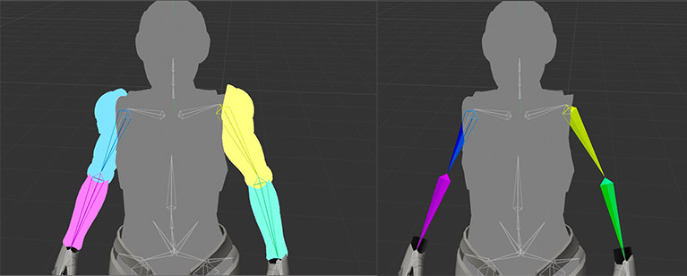
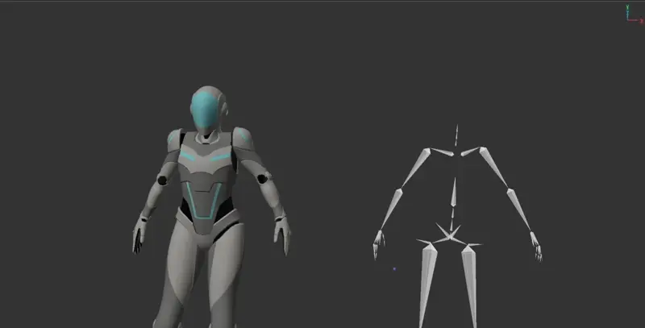
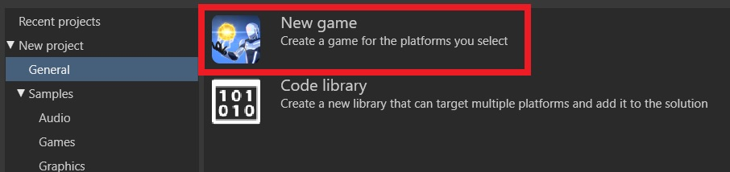
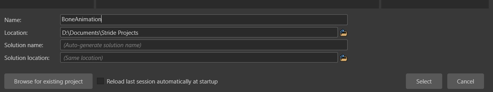
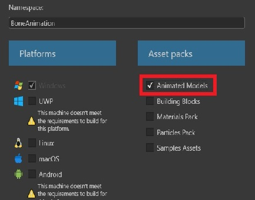
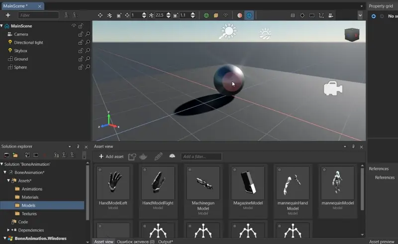
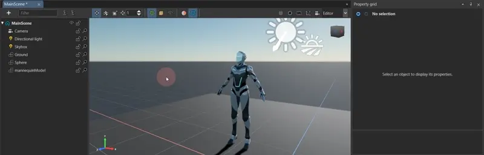
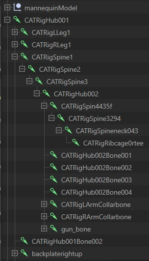

Node animation
Warning
申し訳ありません。このページの日本語訳はございません。英語で表示いたします。
Advanced Programmer Artist
This page explains:
- general concepts
- creating a project, based on a template, and containing a model with a mesh and skeleton
- using code to transform the model
Node animation, also known as skeletal animation or bone animation. This method involves constructing a hierarchical structure of nodes, which serve as a framework for animating a model mesh.
Node animation operates by creating a skeleton composed of interconnected nodes, each with its own parent point.
The process of node animation based on skinning. By the connection the mesh vertices to the nodes.

Each vertex can be influenced by one or more node through weight values that determine how much each bone affects on the area of the mesh.When a node is moved, it influences the position and orientation of adjacent bones and the attached mesh.

Note
Game Studio is currently unable to visualize nodes and their impact on the model mesh (weight values).
Tip
Use 3D modelling software to build a hierarchy of nodes and set the area of their influence on the mesh (weight values), such as Blender, Maya or others.
Operating principle
When importing a model containing nodes, Stride automatically creates a Model Skeleton, containing a description of the nodes array ModelNodeDefinition. And also a model Mesh with the MeshSkinningDefinition parameter, containing an array of nodes and areas of their influence (weight values) on the model mesh MeshBoneDefinition. In this case, all model nodes are indexed.
To manage model nodes, the SkeletonUpdater class is used, which performs a hierarchical model nodes transformation.
SkeletonUpdater class allows you to transform one node, and the next node in the hierarchy that relies on it will be automatically transformed.
Creating a project
- Launch Stride and Create New Project


- Add asset with Animated Models

- Add mannequin model to the scene

- Create SyncScript with a code and add it to model
using Stride.Engine;
using Stride.Rendering;
using Stride.Core.Mathematics;
namespace BoneAnimation
{
public class BoneAnimation : SyncScript
{
// Name of node/bone in skeletal hierarchy
private readonly string boneName = "CATRigSpine3294";
// Node index
private int nodeIndex;
// Transformation nodes variables
private Vector3 nodePosition;
private Vector3 nodeScale;
private Quaternion nodeRotation;
// ModelNodeTransformation array contain the structure of the node mapping to its parent nodes, the transformation values Rotation, Position, Scale, and the matrix values Local and World.
private ModelNodeTransformation[] nodeTransformation;
public override void Start()
{
// Initialization of the script.
// The SkeletonUpdater class allows you to obtain the skeletal structure of a model for applying node transformations.
SkeletonUpdater skeletonUpdater = Entity.FindRoot().Get<ModelComponent>().Skeleton;
// Get index of specific node by name and values Rotation, Position and Scale
// This example uses a neck node called "CATRigSpine3294"
for (int i = 0; i < skeletonUpdater.Nodes.Length; i++)
{
if (skeletonUpdater.Nodes[i].Name == boneName)
{
// getting the Rotation value of a node by name
nodeRotation = skeletonUpdater.Nodes[i].Transform.Rotation;
// getting the Position value of a node by name
nodePosition = skeletonUpdater.Nodes[i].Transform.Position;
// getting the Scale value of a node by name
nodeScale = skeletonUpdater.Nodes[i].Transform.Scale;
nodeTransformation = skeletonUpdater.NodeTransformations;
nodeIndex = i;
}
}
}
public override void Update()
{
// Do stuff every new frame
// changing the Rotation value of a node by node index
nodeTransformation[nodeIndex].Transform.Rotation = nodeRotation + new Quaternion(0,0.1f, -0.5f, 0);
// changing the Position value of a node by node index
nodeTransformation[nodeIndex].Transform.Position = nodePosition + new Vector3(0,0.1f,0);
// changing the Scale value of a node by node index
nodeTransformation[nodeIndex].Transform.Scale = nodeScale + new Vector3(0,0.1f,0);
}
}
}
This example uses a neck node called "CATRigSpine3294". Nodes names can be found in a Property grid,

Note
Game Studio currently only provides preview information about the nodes
using a third-party 3D modelling software,

or with a code.
...
public override void Start()
{
SkeletonUpdater skeletonUpdater = Entity.FindRoot().Get<ModelComponent>().Skeleton;
for (int i = 0; i < skeletonUpdater.Nodes.Length; i++)
{
Log.Warning(string.Format("NodeParentId: {0}, NodeIndex:{1}, Name: {2}",
skeletonUpdater.Nodes[i].ParentIndex, i,
skeletonUpdater.Nodes[i].Name));
}
}
...